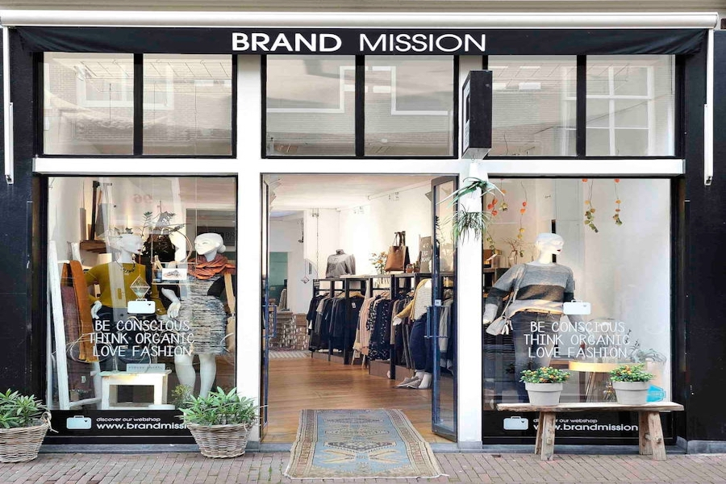

Opening Winkel Amsterdam
John Appleseed | 19-1-2024
Met een feestelijke ceremonie opende BrandMission vandaag een nieuwe vestiging in het hartje van Amsterdam. Op loopafstand van het Centraal Station moet dit duurzaam initiatief een nieuwe groene manier van winkelen gaan bieden voor de Amsterdammers.
BrandMission is een Pionier op het gebied van duurzame mode. Het bedrijf heeft de stad uitgebreid met een nieuwe winkel die niet alleen stijlvolle kleding en accessoires verkoopt, maar ook een statement maakt over het belang van ethische en milieuvriendelijke keuzes in de hedendaagse modewereld.
Het entree
Bij het binnenstappen van de winkel worden alle klanten begroet door een prachtige groene muur. Deze muur dient niet alleen als decoratief element, maar geeft ook perfect weer de toewijding die BrandMission heeft voor milieuverantwoord ondernemen. Met deze nieuwe winkel wil het bedrijf als het ware een centrum creëeren waarin klanten kunnen komen voor kleding, maar ook inspiratie op kunnen doen voor het ontwikkelen van een milieuvriendelijk leefstijl.
Tijdens de opening werden de gasten getrakteerd op biologische hapjes en drankjes, gemaakt met lokale en seizoensgebonden ingrediënten. Dit laat nog maar weer zien hoe toegewijd het bedrijf is aan het maken van een groene toekomst.
In de winkel
De collectie in de winkel laat duidelijk zien wat de kernwaarden van BrandMission. Ieder kledingstuk is geselecteerd op de kernwaarden duurzaamheid en ethiek. De herkomst van de materialen en het productieproces zijn factoren waar BrandMission ook veel aandacht aan besteed.